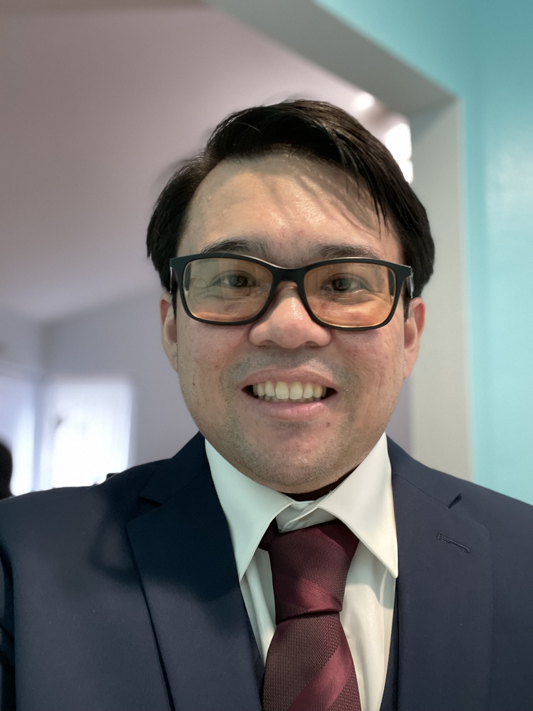

OHMEKO OCAMPO

Phone Number: 1(619)708-9473
Email: ohmeko.ocampo@gmail.com
LinkedIn
GitHub
WORK EXPERIENCE
Software Test Engineer, SAIC (Science Applications International Corporation) [Aug 2018 - Present]
Test Engineer, Test Team Scrum Master
QA and Developer Support for aircraft maintenance web application system for the US Navy and Airforce. I provide
support in the development, integration, and testing of the software.
Responsibilities Include:
- Refactoring and Creating test cases and test events for the software both manually and automated testing with Selenium, Zephyr, and jUnit.
- Assisting in fixing bugs and adding new features to the software with the Development Team.
- Developing features in the web app using the following technologies: HTML5/CSS3,JavaScript,Java,Angular,Apache Tomcat, MongoDB.
- Test Team Scrum Master using Agile Methodology
Intern Technical I, SAIC (Science Application International Corporation) [Apr 2018 - Aug 2018]
Intern for Development and Test Team
Technical Support for an airplane maintenance web application system, providing support in the development, integration, and testing of the software.
Responsibilities Include:
- Manually tested and refactored old test cases of an older version of the software for new software.
- Participated in Test Team Scrums and UI Test Scrums
- Assisted in test events, helped setup testing environments for Airforce and Marine testers
Electrical Engineering Intern, General Dynamics - Ordnance and Tactical Systems [Oct 2017 - Apr 2018]
Manufacturing Team Intern
Software and factory floor support for the testing of AC/DC motors, resolvers, and synchros.
Assisted manufacturing team in automating testing of AC/DC motors, created a more ergonomically friendly testing environment for workers,
and formatted and managed excel spreadsheet test data for software application.
Responsibilities Include:
- Designed/Implemented GUI for automating testing motors for highest torque swing in MATLAB.
- Crafted test templates for HIPOT and Megger Insulation Testing using Chroma CaptivATE software
- Learned LabView to help with creating automation software for Brush Plating.
Student and Assistant Grader - SDSU Computer Science Department [Sept 2015 - May 2018]
Teacher Assistant
Assisted Dr. Wei Wang with grading homework and tests and tutoring students.
Responsibilities Include:
- Organized office hours to help students with problems in upper division computer science courses.
- Answered student's questions about homework and projects related to class during office hours.
CAAT Academic Tutor - SDSU: Educational Opportunity Program [Jan 2016 - May 2018]
Engineering and Computer Science Tutor
Tutored students with their assignments, studying for tests, and projects in upper division Electrical Engineering and Computer Science Courses.
Responsibilities Include:
- Formulated personal lesson plan for students.
- Assisted students with homework, projects, and studying for exams.
Pear Deak Tutor [Jan 2024 - Present]
Math and Science Tutor
I tutor math and science subjects for elementary, middle school, high school, and college level students.
Responsibilities Include:
- Craft lesson plans for each individual students
- Assist students with their homework, projects, or test preparation.
- Explain and lecture students on topics they have difficulty with.
TutorMe Tutor [Feb 2017 - Jan 2024]
Engineering and Computer Science Tutor
I tutor Electrical Engineering and Computer Science subjects for Highschool and College level classes in an online setting.
Responsibilities Include:
- Understanding students diverse learning styles and creating unique lesson plans for students.
- Assist with homework, projects, or clarifying concepts a student may have through an online white board software.